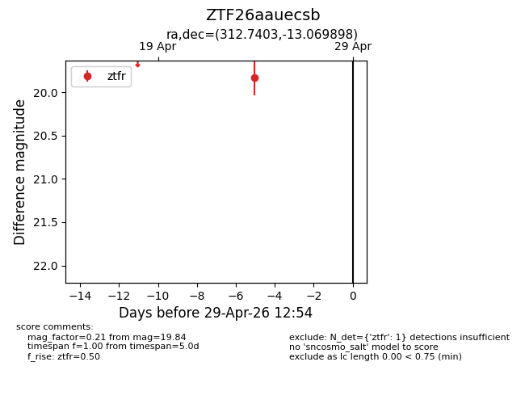
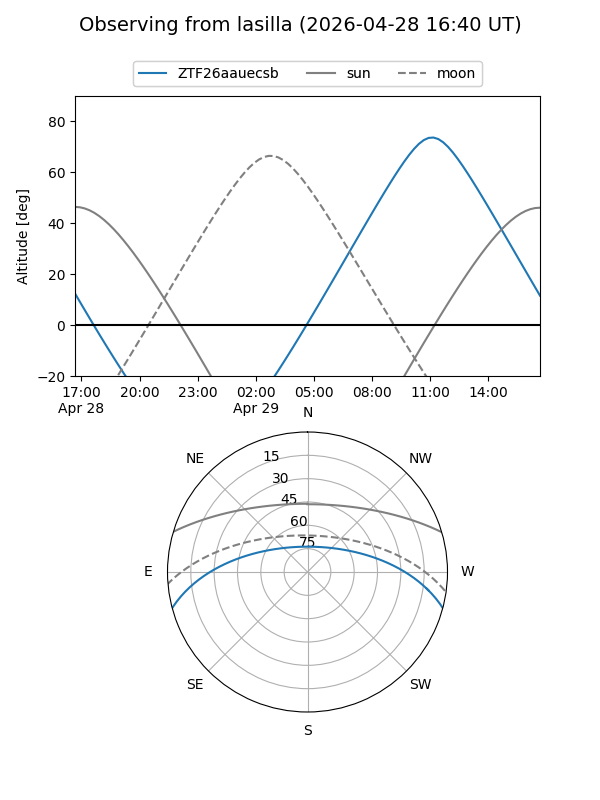
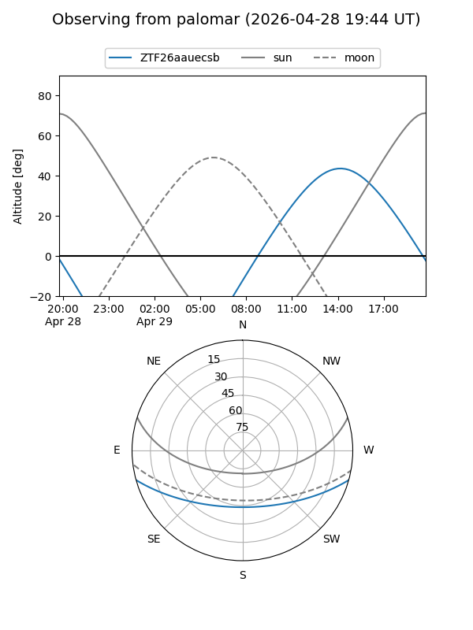

ZTF26aauecsb
Target ZTF26aauecsb at 2026-04-29 12:58
Aliases and brokers:
FINK: link
Lasair: link
ALeRCE: link
alt names
ZTF26aauecsb (ztf,fink_ztf)
Coordinates:
equatorial (ra, dec) = 312.7403,-13.06990
equatorial (HMS+DMS) = 20:50:57.68,-13:04:11.63
galactic (l, b) = (34.2900,-32.34530)
Flags:
Photometry:
last ztfr=19.84
1 ztfr detections
Lightcurve

Visibility


Additional plots